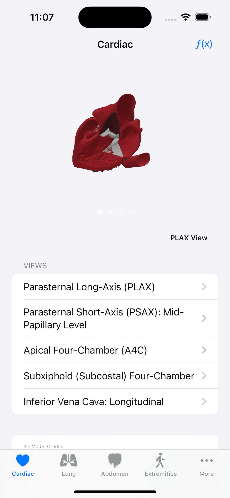
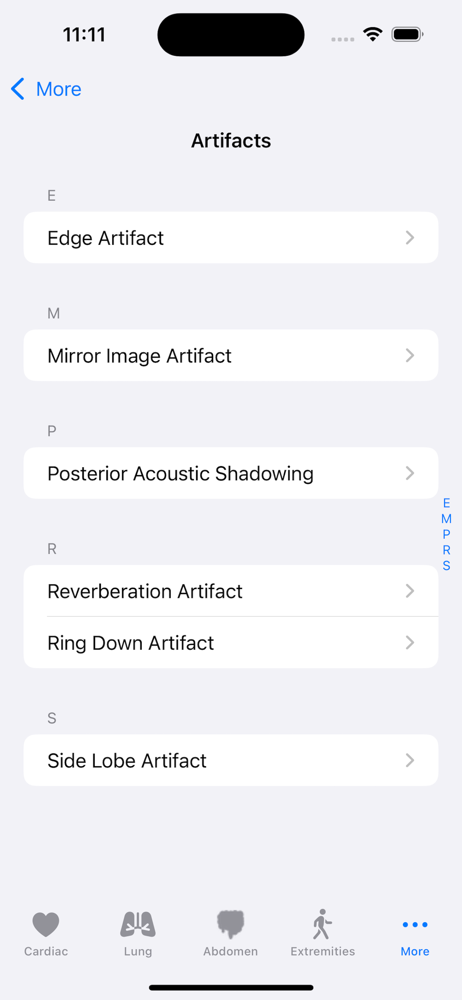

A bedside ultrasound reference built for clinicians and trainees — scan protocols, probe positioning, labeled images, real cine clips, and clinical calculators for the views you actually scan.
Universal app for iPhone & iPad. Works fully offline — no account, no tracking.

Open a system, pick a view, and get straight to the windows, landmarks, and pathology you need at the bedside.
Every view pairs hands-on guidance with the imaging you'll actually see — plus the tools to quantify what you find and track your reps.
Exact transducer placement, preset, and indicator direction for every view — with positioning photos so you start in the right spot.
Full-screen ultrasound loops you can scrub, pause, and replay — see what normal motion and pathology look like in real time.
Rotate a 3D model alongside each cardiac window to connect probe angle with the anatomy you're imaging.
Quantify at the bedside: EF by EPSS and fractional shortening, IVC collapsibility index, and RV:LV ratio — each with the formula and a cited reference.
Labeled reference images for each view so you can name every structure and spot the key landmarks fast.
Log the studies you perform into a date-stamped portfolio that builds over time — stored privately on your device.
Track your counts against common credentialing targets so you always know how close you are to sign-off.
Sharpen interpretation with rotating teaching cases and immediate feedback on your read.
All content and video are bundled in the app and available without a connection. No account, no analytics, no data leaves your phone.
A few screens from the app — built around the way you actually work at the bedside.
Browse by systemPick a window — here the cardiac views, with an interactive 3D heart.

Position & identifyPreset, placement, and indicator direction beside a labeled image.
Real cine clipsFull-screen loops you can scrub, pause, and replay.

Artifact libraryLearn to tell true signal from common imaging artifacts.
Pocket POCUS is created by practicing clinicians who scan at the bedside — designed to be the reference they wanted in training.
For educational and reference use only. Pocket POCUS is an informational tool for trained healthcare professionals and trainees. It is not medical advice and does not replace professional training, clinical judgment, institutional policies, or licensed medical oversight. See our Terms of Use.
A universal iPhone and iPad app. Have a question or want to be notified at launch? We'd love to hear from you.
 Pocket POCUS
Pocket POCUS